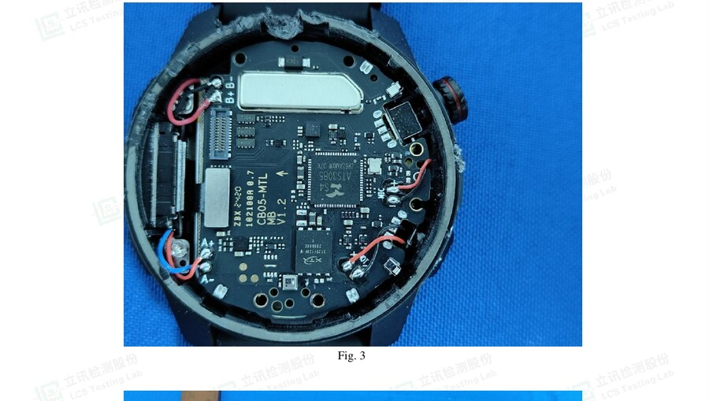
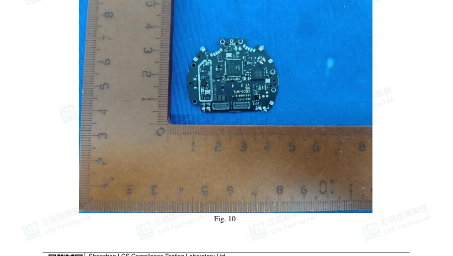
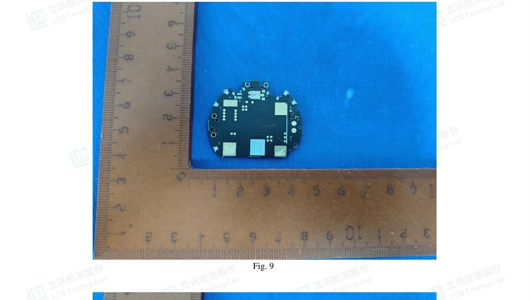

Starmax GTX2 · custom-firmware track
A step-by-step guide to safely opening a spare GTX2 and capturing the photos we need to find a firmware-recovery path. Tick each shot as you take it — your progress is saved on this device.
A sacrificial unit means the worst case is a dead spare, never your daily watch — and it lets us prove recovery, which is the gate that was missing before. Keep your daily driver on stock.
We read the stock flash to a golden.bin and prove we can write it back first.
The flash is an external SPI-NOR chip, so a programmer can always re-flash it — that's the safety net.
Direction is not yet settled — decide it from the closed unit, not by guessing. The FCC photos show the watch fully disassembled (back puck off in Fig 1, front module off in Fig 2), so they reveal what's on which face but not the intended service seam. Evidence leans FRONT (the component side with the SoC/flash/pads carries the two display/touch FPC connectors — Figs 12/13 — so it sits under the display), but that's an inference, not proof. So: look before you open.
Heat = heat pad / hair-dryer ≤70 °C only (a gun cooks the LiPo / delaminates the panel). Never pry against the AMOLED glass or the LiPo. Plastic tools only.
THE DECIDER — check the closed spare + photograph before prying:
Once you're in (either way): the target is the component side (SoC/flash + 2 FPC connectors). Watch the 2 display/touch FPCs (flip the latch, don't pull the ribbon) and the LiPo. Then macro the pad cluster NW of the SoC (Fig-13 red arrow) — the SWD/test-point candidate.
From the public FCC filing (ID 2ASAU-GTX2) — this is the exact GTX2 board, so you know what you're looking at once you're in. Fine pad detail still comes from your macros; these give you the layout + landmarks.

CB05-MTL MB V1.2. The ATS3085S4 SoC is center-right; the XT25F128F flash sits just below-left of it; the crown is at 3 o'clock; battery leads (B+/B−, A+/A−) tack to the left edge. ★ Hunt the SWD / test-point pads just NW of the SoC.

Tick each as you capture it. ★ starred = the recovery gate — the most important shots.
ATS3085 / S4 + eagle logoXT25F128F; note leadless (WSON) vs leaded (SOP)DIO CLK RST RX TX SWD TP1..nCB05-MTL MB V1.2A wired path to read + rewrite the flash. Any one of these is enough:
SWDIO, SWCLK, usually GND, sometimes nRESET / VCC / SWO.TX line idles high and bursts at boot (~2 Mbaud). Useful for logs, maybe a bootloader.XT25F128F is an external SPI-NOR. A clip or flying leads on its pins let a programmer read/write it regardless of any SoC lock. This is the fallback that makes a permanent brick unlikely.We do R1 → R3 before any custom flash. This is non-negotiable.
golden.binread the full chip twice, compare, verify the size, keep off-device copies. Do this FIRST.golden.bin back and confirm the watch boots. This is the hinge: if a later flash bricks it, you re-flash golden.docs/teardown-photos/ in the project.The flash is external SPI-NOR, so a programmer reads/writes it directly — bypassing any SWD lock or SoC read-protection. Secure-boot (if the eFuse is burned) only gates the recovery bootloader; an app-only mod leaves that untouched. The real risks left: the flash may be leadless (WSON — trickier to clip), and opening the watch ends its water resistance.